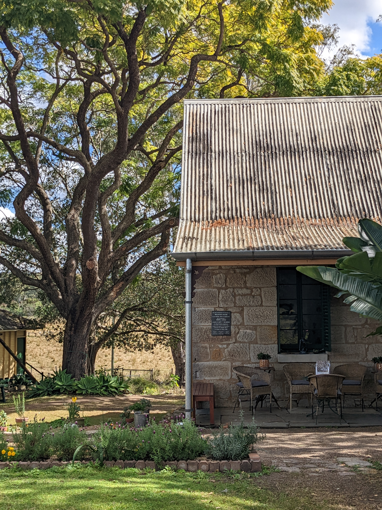
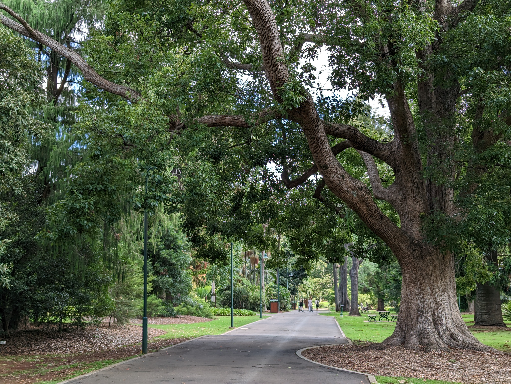
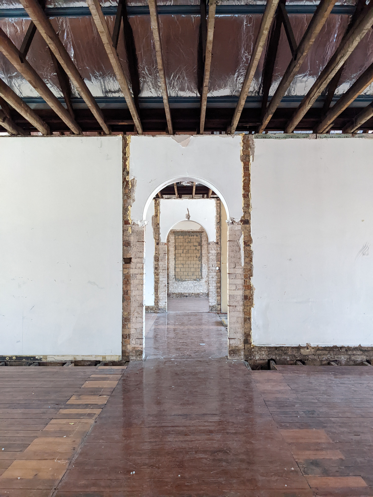

Understand the history and place
We review documentary sources, previous studies, heritage listings, site development and available records, supported by inspection and analysis of the existing place.
Conservation Management Plans · Brisbane & Queensland
A clear framework for understanding significance and guiding the long-term care, use and change of heritage places.


Understanding significance
A Conservation Management Plan brings together a place's history, physical evidence and heritage significance, then translates that understanding into practical policies for future decisions.
We prepare Conservation Management Plans that are clear, proportionate and useful to the people responsible for a place. The aim is not simply to record significance, but to provide a workable framework for conservation, maintenance, adaptation, new work and ongoing management.
Our approach
We review documentary sources, previous studies, heritage listings, site development and available records, supported by inspection and analysis of the existing place.
We identify the elements, spaces, fabric, setting and relationships that contribute to heritage significance, including relative levels of significance where this will assist future decision-making.
We consider the practical requirements of continued use alongside heritage values, including likely pressures for adaptation, access, services, maintenance and future development.
We develop clear policies to guide conservation, maintenance, adaptation, new work and change so that future decisions can be made consistently and with an understanding of significance.
A working document
A good Conservation Management Plan should remain useful after it is prepared.
It can support owners, facility managers, architects, consultants and approval authorities when considering maintenance, repairs, alterations, new services, adaptive reuse and future development. For larger or evolving sites, it can also provide continuity as project teams and priorities change over time.

When a Conservation Management Plan may be useful
A Conservation Management Plan is particularly valuable where a place has substantial heritage significance, multiple buildings or layers of development, ongoing maintenance needs, or a foreseeable program of adaptation and change.
They are commonly useful for State and local heritage places, schools, churches, institutional sites, commercial properties, residential places and precincts where decisions need to be made over a longer period rather than for a single project.
The scope can be tailored to the place and the decisions the document needs to support. This may include focused historical research, fabric analysis, significance assessment, conservation policies and practical guidance for management and future works.
Common questions
A Conservation Management Plan brings together the history, physical evidence and heritage significance of a place, then establishes policies to guide its conservation, use, maintenance, adaptation and future change.
A CMP is particularly useful for significant heritage places, complex sites, institutional properties and places undergoing major change or adaptive reuse. It can provide a consistent framework for decisions over the long term.
A CMP provides an overarching understanding of a place and policies for its ongoing management. A Heritage Impact Statement usually assesses the effect of a specific proposed project or set of works.
Orton Heritage is based in Brisbane and works across Queensland and Northern New South Wales on local and State heritage places, institutional sites, churches, schools, residential places and other complex heritage properties.
Discuss a place